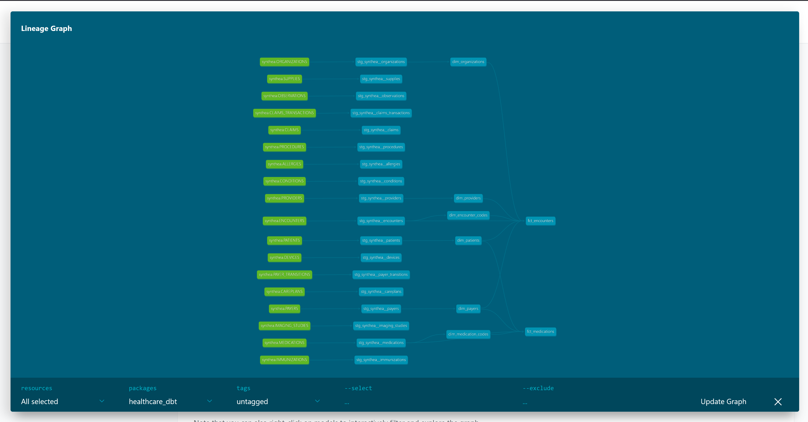

01Architecture
Three layers, each with exactly one job.
RAW is the landing zone. Every column is VARCHAR and nothing changes it. A malformed value in a future file should land here and fail a test downstream, not crash ingestion at 3am.
STAGING is one view per source table (18 of them): renamed and cast, with no business logic and no joins.
MARTS is the analyst-facing product: a dimensional model materialised as tables, so it's computed once at build time and fast to read.

02The dimensional model
Two fact tables share conformed dimensions, so a question like "total spend per patient across encounters and medications" reconciles instead of producing two numbers nobody trusts.
| Model | Grain | Rows |
|---|---|---|
fct_encounters | one row per clinical encounter | 79,142 |
fct_medications | one row per medication prescribed | 78,009 |
dim_patients | one row per patient | 1,229 |
dim_providers | one row per provider | 840 |
dim_organizations | one row per organisation | 840 |
dim_medication_codes | one row per medication code | 262 |
dim_encounter_codes | one row per encounter code | 56 |
dim_payers | one row per payer | 10 |
The test for fact or dimension: would you SUM() it, or GROUP BY it?
03Design decisions
Type honesty: DATE vs TIMESTAMP_TZ
Synthea mixes date-only and full timestamp columns. Casting a date to a timestamp invents a 00:00:00 that doesn't exist, so every temporal column was checked against the raw data first. Column names follow the type: _date or _timestamp.
Money as DECIMAL, not FLOAT
Binary floating point can't represent cents exactly, and the error drifts when you aggregate. All cost columns are DECIMAL(12,2).
Clinical codes stay VARCHAR
SNOMED and RxNorm codes look numeric, but they're identifiers. Casting to a number risks stripping leading zeros.
Hashed surrogate keys
Facts join to dimensions on deterministic hashes, ready for slowly changing dimensions. Auto-increment keys would change on every full rebuild.
LEFT JOIN, never INNER JOIN
An inner join silently drops unmatched facts. A left join keeps them with a NULL key, which a not_null test then turns into a loud failure. A join must never be allowed to quietly delete facts.
PII stops at the marts boundary
SSN, passport, licence and address-level detail are dropped before the analyst-facing layer. In healthcare that's a compliance question, not a style preference.
04A real bug: fan-out
fct_medications first built at 85,337 rows against a staging count of 78,009, and the build reported success because the model had no tests yet.
Cause: the medication dimension was built with SELECT DISTINCT code, description. RxNorm is inconsistent about capitalisation, so 13 codes appeared with two descriptions each. Every medication with one of those codes matched two dimension rows, and the join duplicated it.
Fix: deduplicate on the key, not the pair. The order by isn't cosmetic. Without it, Snowflake picks a row arbitrarily and tomorrow's build could differ.
qualify row_number() over (
partition by code
order by description
) = 1Prevention: a unique test on the surrogate key now fails the build if the dimension ever gains a duplicate. Without it, a fact table that is 9% wrong ships.
05Data quality & CI
| Test | What it guarantees |
|---|---|
unique on dimension keys | Fact tables can't fan out |
not_null on fact foreign keys | Fact tables can't have orphans |
relationships | Every key resolves to a real dimension row, since Snowflake doesn't enforce foreign keys |
accepted_values | Value domains checked against the real data, never guessed |
Everything runs with dbt build, so a model that fails its tests blocks its children from building on bad data. A GitHub Actions workflow builds all 26 models and 39 tests against an isolated CI schema on every pull request, and a failure blocks the merge. On its first run, CI caught a package-name error that a local cache had been hiding.
06Orchestration & security
- A daily Airflow DAG in Docker runs
load_raw → dbt deps → dbt build. Airflow handles scheduling and retries, and dbt keeps the model dependency graph, so there aren't two graphs to maintain. catchup=Falseon purpose, so a restart doesn't backfill every missed day and burn warehouse credits.- dbt runs as a least-privilege role through a dedicated key-pair service account, verified unable to write to RAW.
- No secrets in the repo:
profiles.ymlonly references environment variables, and credentials live in GitHub Secrets.
07Known gaps & next steps
fct_medicationshas no primary-key test because Synthea's medications table has no natural key. That's documented rather than covered with a synthetic key that would give false confidence.- More fact tables (procedures, observations, conditions, immunisations) on the existing conformed dimensions.
- Type 2 slowly changing dimensions on payer history.
- Slim CI (
state:modified+), and dependencies baked into the Airflow image instead of pip-installed per task.
The live Snowflake warehouse was decommissioned after the free trial. Clone the repo and point it at your own account to run it.